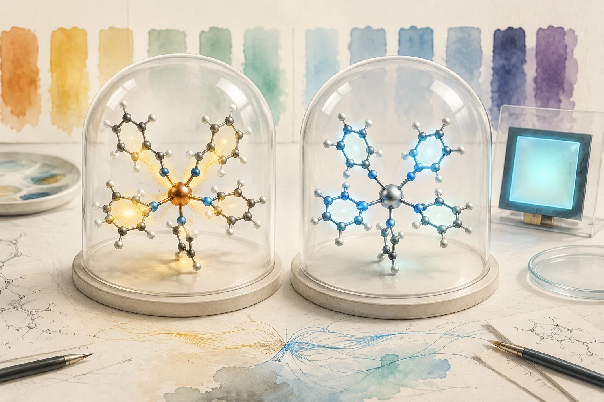

이 연구에서 OLED 발광분자의 전자상태를 계산한 장치는 고전 CPU였습니다. OTI Lumionics와 Samsung Advanced Institute of Technology(SAIT, 삼성종합기술원)는 양자회로에 맞춰 설계한 iQCC 알고리즘을 에뮬레이션해 큰 활성공간의 분자를 계산했습니다. 결과는 2026년 8월 13일 JACS에 공개됐습니다.[1]
연구진은 Q1 분자의 활성공간을 약 200개 스핀 오비탈까지 확장했습니다. 별도로 Ir(III)·Pt(II) 인광체 14종에서 에너지 차이를 실험과 비교하고, 대표 착물의 여기 성격을 분석했습니다. 처리할 수 있는 문제의 크기와 화학적 정확도를 각각 살펴볼 수 있는 결과입니다.

도식 크게 보기 ↗
Ir·Pt 인광체의 T1 상태가 어려운 이유
OLED 인광체의 색과 에너지 전달을 이해하려면 가장 낮은 삼중항 상태 T1과 단일항 바닥상태 S0 사이의 에너지 차를 안정적으로 계산해야 합니다. Cyclometalated Ir(III)와 Pt(II) 착물에서는 ligand-centered(LC) π→π* 여기와 metal-to-ligand charge transfer(MLCT)가 섞이고, 금속 중심의 큰 상대론 효과와 spin-orbit coupling이 발광·광물리 특성을 좌우합니다.
문제는 T1이 하나의 Slater determinant로 잘 표현되지 않는 경우가 많다는 점입니다. 단일 reference에 강하게 의존하는 projective coupled-cluster 계산은 spin contamination과 다중참조 성격 때문에 상태를 잘못 식별하거나 방출 갭을 지나치게 낮게 예측할 수 있습니다. 반면 범함수 선택에 민감한 DFT·TDDFT는 후보군에 따라 오차와 순위가 달라집니다.
고전 전처리
최대 약 200 qubits
고전 에뮬레이션
MLCT/LC 분석
미래 QPU 기준선
iQCC가 계산한 대상과 범위
Iterative Qubit Coupled Cluster(iQCC)는 전자 Hamiltonian을 qubit Pauli operator의 합으로 바꾸고, 선택된 entangler를 순차적으로 적용하는 unitary ansatz로 상관 에너지를 낮춥니다. 양자회로에서는 Pauli rotation과 entangling gate로 구현할 수 있으므로 VQE 계열의 quantum-native solver입니다.
고전 에뮬레이션은 iQCC에 특유한 Hamiltonian dressing과 Pauli 연산자 구조를 이용합니다. 전체 상태벡터를 직접 전개하는 대신 이 구조 안에서 entangler를 고르고 매개변수를 최적화합니다. Q1의 활성공간을 최대 약 200개의 스핀 오비탈까지 확장한 사례에서는 최대 약 150만 개 매개변수와 1천만 개 이상의 논리 수준 two-qubit gate에 해당하는 ansatz를 다뤘습니다.[1]
논리 큐비트와 게이트 수의 뜻
논문에서 말하는 약 200 logical qubits는 활성공간의 스핀 오비탈에 대응하는 이상적 레지스터 크기입니다. 실제 오류정정 장치의 큐비트 수와는 구별됩니다. 1천만 개 이상의 two-qubit gates는 완전 연결을 가정한 ansatz의 CNOT 추정량입니다. QEC encoding, Clifford+T 컴파일, 라우팅과 SWAP의 추가 비용을 포함한 내결함성 자원 추정은 별도로 필요합니다.
정확도 개선은 iQCC보다 iQCC+PT에서 크게 나타났다
논문의 14개 인광체 비교에서 순수 iQCC는 MAE 0.1180 eV를 기록했습니다. 표에 제시된 DFT/TDDFT 두 방법과 MAE가 비슷했고, 결정계수 R²는 PT를 쓰지 않은 비교군 중 가장 높았습니다. R²는 선형 적합의 결정계수입니다. 비변분적 고전 보정인 Epstein-Nesbet perturbation theory를 더한 iQCC+PT는 MAE 0.0501 eV와 R² 0.9411을 얻었습니다.
계산·실험 조건
iQCC의 에너지 차이는 B3LYP로 최적화한 T1 구조에서 구한 수직 방출 에너지입니다. 표의 TDDFT 비교값은 S0 구조에서 계산했으므로, 방법마다 구조 조건이 다릅니다. Ir/Pt에는 LANL2DZ ECP, 나머지 원자에는 6-31G**를 썼고 spin–orbit coupling과 zero-point energy는 포함하지 않았습니다. 14종의 정확도 평가에서는 대체로 CAS(70전자, 70공간 궤도)를, Q2·Q4에는 CAS(100전자, 100공간 궤도)를 사용했습니다. Q1의 최대 200큐비트 스케일링은 이 정확도 평가와 별도입니다. 실험 PL은 77 K 저유전 용매 조건이며, 12종은 본 연구 측정값, Q12·Q14는 문헌값입니다.[1]
| 방법 | R² | MAE (eV) | 해석 |
|---|---|---|---|
| RO-CAM-B3LYP | 0.6085 | 0.1161 | 비교군에서 낮은 DFT MAE |
| TD-B3LYP | 0.6638 | 0.1209 | 순수 iQCC와 유사한 MAE |
| CCSD | 0.8070 | 0.2200 | 단일-reference 한계가 드러남 |
| CR-CC(2,3) | 0.7791 | 0.2912 | triplet 상태의 spin contamination 영향 |
| iQCC | 0.8786 | 0.1180 | 더 높은 선형 적합도, MAE는 DFT와 비슷 |
| iQCC+PT | 0.9411 | 0.0501 | 이번 비교의 최상 결과 |
실험과 비교한 오차에는 iQCC 계산뿐 아니라 기저, 활성공간, 상대론 처리와 환경 근사의 오차도 함께 반영됩니다. 서로 다른 오차가 상쇄될 수 있어, 실험 PL과의 일치와 같은 Hamiltonian에서의 solver 정확도는 구별해 읽어야 합니다. 저자들은 같은 모델에서 variational energy를 CISD와 비교해 iQCC가 더 낮은 에너지를 준다는 결과를 별도 근거로 제시했습니다.
검증의 두 층
Solver accuracy는 동일 Hamiltonian·active space에서 FCI, DMRG, selected CI 또는 엄밀한 variational bound와 비교해야 합니다. Model-to-experiment accuracy는 geometry, basis, 상대론 처리, spin-orbit coupling, 환경과 진동 효과까지 합친 결과입니다. 두 오차를 섞으면 알고리즘의 실제 기여를 과대평가할 수 있습니다.
MLCT와 LC 성격까지 읽은 분석
저자들은 에너지와 함께 금속에 할당된 전자수의 변화도 살폈습니다. 같은 T1 구조에서 두 전자상태를 비교하자, T1의 금속 전자수는 S0보다 Ir 착물 Q1·Q6에서 각각 약 0.358·0.462개 줄었습니다. Pt 착물 Q9·Q14의 감소량은 약 0.102·0.112개였습니다. 연구진은 Ir 착물의 큰 감소를 MLCT 성격과, Pt 착물의 작은 변화를 LC 전이가 우세한 상태와 연결했습니다. 이 값은 NAO에 투영한 전자 점유수로 추정했으며 1전자 밀도행렬의 비대각 성분은 생략했습니다.[1]

이 전자수 분석은 T1 에너지와 함께 여기의 성격을 구별하게 합니다. OLED 후보를 고를 때는 에너지 차이뿐 아니라 금속이 얼마나 관여하는지, 전하이동과 리간드 국소 여기의 비중이 어떠한지도 살펴볼 수 있습니다. 상태 성격과 전이 특성을 함께 검토하는 것은 후속 치환기 설계와 열화 메커니즘을 조사할 때 참고할 수 있는 방향입니다.
200큐비트라는 발표를 읽는 맥락
Scott Genin의 8월 19일 게시물은 약 200 logical qubits, 1천만 개 이상의 two-qubit gates, 150만 개 매개변수와 single chip을 강조했습니다.[2] 게시물도 고전 에뮬레이션을 설명하며 이를 미래 물리 하드웨어의 비교 기준으로 제시합니다. 이 숫자는 위에서 살핀 이상적 레지스터와 ansatz의 규모를 가리킵니다. 보충자료는 OLED 계산에 AMD EPYC 7702 64코어 프로세서 두 개를 갖춘 계산 노드와 64개 프로세스를 사용했다고 명시합니다. 발표의 간결한 문구와 계산 조건을 함께 읽을 필요가 있습니다.[1]
OLED·DFT·ML 역설계 업무에서의 활용
OLED inverse-design pipeline에서는 iQCC 계열 계산을 고가치 후보의 고정밀 전자구조 재판정층에 둘 수 있습니다. GNN·surrogate와 DFT/TDDFT로 넓은 chemical space를 먼저 줄인 뒤, spin contamination·다중참조·상태 ordering이 의심되는 소수 Ir/Pt 착물을 다시 계산하는 방식입니다.
- TDDFT와 orbital 분석으로 불확실성이 큰 후보와 CT/LC character가 뒤집히는 후보를 고릅니다.
- Geometry, basis, relativistic treatment와 active space를 고정합니다.
- iQCC·iQCC+PT를 DMRG, selected CI, CASSCF/NEVPT2 같은 강한 기준선과 같은 Hamiltonian에서 비교합니다.
- T1 갭 외에 metal charge, natural occupation, transition density와 spin purity를 함께 기록합니다.
- 미공개 후보의 spectroscopy 또는 device 결과로 blind test를 수행합니다.
이 절차는 본 리뷰가 제안하는 후보 재판정 방식입니다. 원 논문의 계산·측정 결과와 구분해 후속 연구에서 시험할 수 있습니다.
미래 QPU가 넘어야 할 체크리스트
- 같은 문제인가: geometry, basis, active space, Hamiltonian과 상대론 처리가 동일해야 합니다.
- 같은 출력인가: ground-state energy, T1 갭, MLCT/LC 같은 관측량을 함께 비교해야 합니다.
- 같은 정확도인가: 실험 오차와 solver 오차를 분리하고 variational 기준을 제시해야 합니다.
- 총비용인가: logical-qubit overhead, state preparation, T/Toffoli count, shots, queue, decoding과 고전 전후처리를 포함해야 합니다.
- 강한 고전 상대인가: iQCC emulation, DMRG, selected CI, tensor network와 최신 multireference 방법을 포함해야 합니다.
결론
Q1의 큰 활성공간을 고전적으로 처리한 사례와 14종 인광체에서 얻은 에너지 비교는 계산 규모와 화학적 정확도를 각각 살펴볼 자료를 남겼습니다. iQCC+PT의 좋은 실험 일치는 고전 보정의 기여와 분자 모형의 조건을 함께 읽을 때 의미가 분명해집니다.
앞으로 양자장치를 이 OLED 문제에 적용할 때에는 같은 분자 모형과 목표 정확도에서 관측량, 계산 시간과 필요한 자원을 함께 비교할 수 있습니다. 분자 설계에 쓸 답을 얼마나 잘 구하는지가 그 비교의 중심에 있습니다.
참고문헌
- [1] S. N. Genin, O. Kwon, S. M. Hosseini Jenab, S.-J. Lim, T. Kim, T.-G. Kim, R. Gherib, A. F. Harper, I. G. Ryabinkin, and M. G. Helander, Large-scale quantum computing emulation for accurate triplet states of Ir(III) and Pt(II) phosphorescent emitters, J. Am. Chem. Soc. 148, 35239 (2026), doi:10.1021/jacs.6c04752.
- [2] S. Genin, Quantum emulators simulate OLED materials at 200 logical qubits, LinkedIn (August 19, 2026).